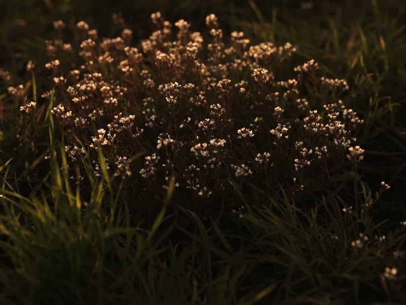

Медоносы — растения, с которых пчёлы собирают нектар и пыльцу. Ниже приблизительный календарь цветения, на котором строится наш пасечный год.
Первыми цветут ива, лещина и подснежники, это первая пыльца. Дальше одуванчик, плодовые деревья (вишня, яблоня, слива) и, если рядом посеян, рапс. Мёд из рапса откачивают в конце мая или в начале июня (рапсовый мёд).
Цветёт акация, и именно с неё получается первый большой мёд сезона (акациевый мёд). Дальше каштан и ряд луговых трав.
Липа (при благоприятной погоде), клевер, донник, чабрец и прочее разнотравье (разнотравье). В августе цветёт подсолнух (подсолнуховый мёд). Гречиха даёт нектар, если её посеяли рядом (гречишный мёд).
Поздние цветы ещё могут давать пчёлам немного нектара и пыльцы, а потом пчёлы готовятся к зиме. Об этом в разделе «Мой год на пасеке».
Цветение зависит от погоды, региона и года: холодная весна сдвигает всё на неделю-две. Поэтому мёд каждый год разный (почему мёд каждый год разный).
Какое растение даёт больше всего мёда?
Всё зависит от года и погоды. В Украине главные медоносы: акация, подсолнух, рапс, липа.
Можно ли посадить медоносы на участке?
Да, см. «Как помочь пчёлам».
Когда у вас первая откачка?
Обычно с акации или рапса, в зависимости от года.